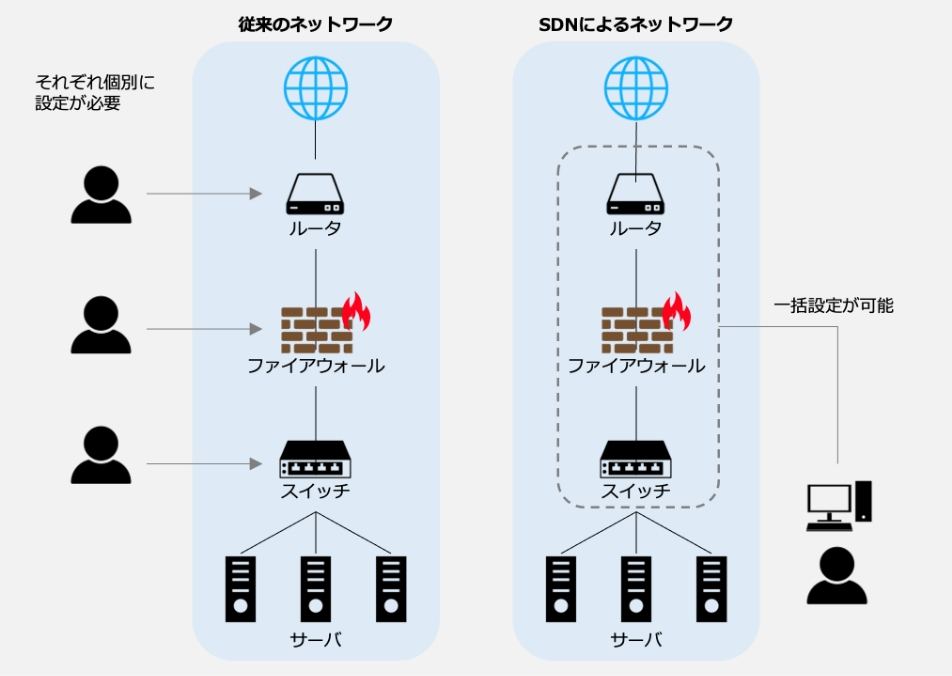
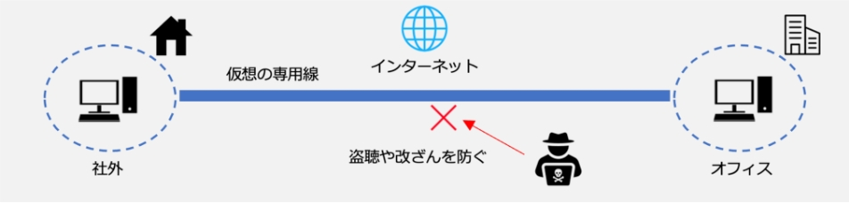

17-2-3. ネットワーク制御
関連する主な管理策
5.23、6.7、8.20~8.24
ネットワーク制御を説明するにあたって、クラウドサービスについて説明します。
クラウドサービスとは、サービス事業者がハードウェアの機能（サーバ、ハードディスクなど）、プラットフォームの機能（データベースやプログラム実行環境など）、ソフトウェアなどを、ネットワーク経由で利用者に提供するサービスのことです。利用者は、どの端末からでもさまざまなサービスを利用することができます。クラウドサービスの利用形態には、主に「IaaS＝アイアース」、「PaaS＝パース」、「SaaS＝サーズ」があります。また、「NaaS＝ナース」と呼ばれるネットワークインフラを提供するサービスもあります。
図63. クラウドサービス利用形態の概要図
IaaS（Infrastructure as a Service）
IaaSとは、インターネット経由でネットワークやサーバ（CPU・メモリ・ストレージ）などのハードウェアやインフラ機能を提供するサービスのことです。IaaSを利用することで、従来は自社で購入、構築し、運用する必要があったハードウェアやインフラの機能を、必要なときに必要なだけ利用できます。
PaaS（Platform as a Service）
PaaSとは、インターネット経由でアプリケーションサーバやデータベースなどのアプリケーションを実行するためのプラットフォーム機能を提供するサービスのことです。PaaSを利用することで、アプリケーションの開発前段階で必要な開発環境の準備（サーバの設置やOSやミドルウェアのインストールと設定、ネットワークの設定など）を省略できます。
SaaS（Software as a Service）
SaaSとは、インターネット経由で電子メール、顧客管理、財務会計などのアプリケーションソフトの機能を提供するサービスのことです。アカウントを持っていれば、インターネット経由でどこからでもアクセスすることができたり、チームでファイルやデータを共有できたりします。
NaaS（Network as a Service）
NaaSとは、インターネット経由でネットワークインフラを提供するサービスのことです。
NaaSの導入により、ネットワーク環境の変更に柔軟に対応できるようになります。NaaSに含まれる主要な機能として、SDN、SD-WANなどがあります。
SDN・SD-WAN
クラウドサービスやWeb会議、リモートワークの普及に伴い、ネットワーク回線にアクセスが集中し、通信速度が低下したり、サービスへの接続ができなくなったりするなどの問題があります。その解決策としてSDNを応用したSD-WANがあります。SDN、SD-WANについて説明します。
SDN（Software Defined Networking）
SDNとは、ソフトウェアを用いてネットワーク構成を動的に変更することです。ネットワークを構成している機器（ルータやサーバ、スイッチなど）を、ソフトウェアを介して一括制御することで、機器設定やネットワーク構成を柔軟に変更できます。SDNのメリットは、ネットワーク機器に対して一括で設定を行えることです。従来のルータ、スイッチといった物理的なネットワーク機器・製品は、1台ごとに個別に設定を行う必要があり、大規模なネットワーク構成を変更する際には、大きな作業負荷がかかりました。しかし、SDNを用いてネットワークを制御することで、管理が1か所で行えるようになるため、ネットワーク機器・製品ごとに個別設定が不要になり、作業負荷が大幅に軽減できます。
図64. 従来のネットワークとSDNによるネットワークの比較
SD-WAN（Software Defined-Wide Area Network）
SD-WANとは、ネットワークをソフトウェアで制御するSDNを、物理的なネットワーク機器で構築したWANに適用する技術のことです。企業の拠点間接続や、クラウド接続などにおいて柔軟なネットワーク構成を実現したり、ネットワーク上で発生する通信を適切に制御したりすることができます。
たとえば、拠点間の通信には閉域網（不特定多数のユーザが利用するインターネットとは異なり、関係者のみが接続できる通信回線）を使用し、信頼できるクラウドサービスには直接外部インターネットへ接続するように切り替えることで、トラフィックの最適化が行えます。
図65. SD-WANで実現できることの例
VPN
個人情報などの重要なデータをインターネット経由で扱う機会が増えたことや、サイバー攻撃の手口が年々巧妙化しているなどの状況を背景に、VPNが注目されています。-WANがあります。SDN、SD-WANについて説明します。
VPN（Virtual Private Network）
インターネット上で安全性の高い通信を実現するための手法です。通信データを暗号化し、送信元から送信先までの通信を保護することで、盗聴やデータの改ざんを防ぎます。VPNを使用することで、ユーザは物理的な専用線で通信しているかのような安全な通信を行えます。
図66. VPNの概要図